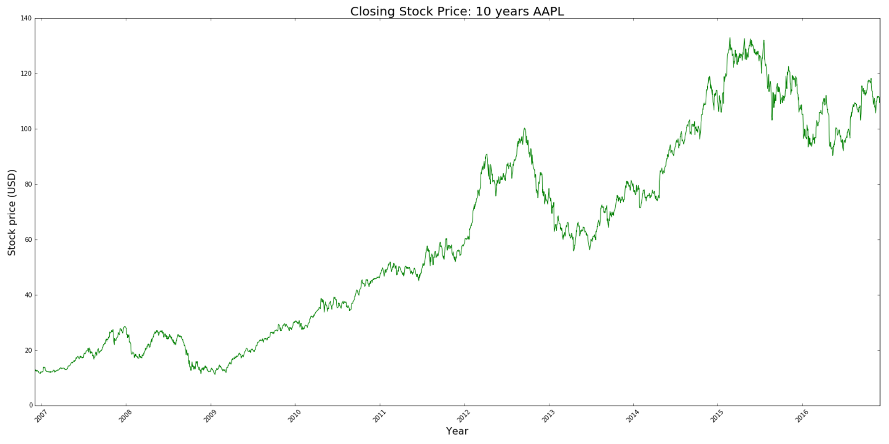
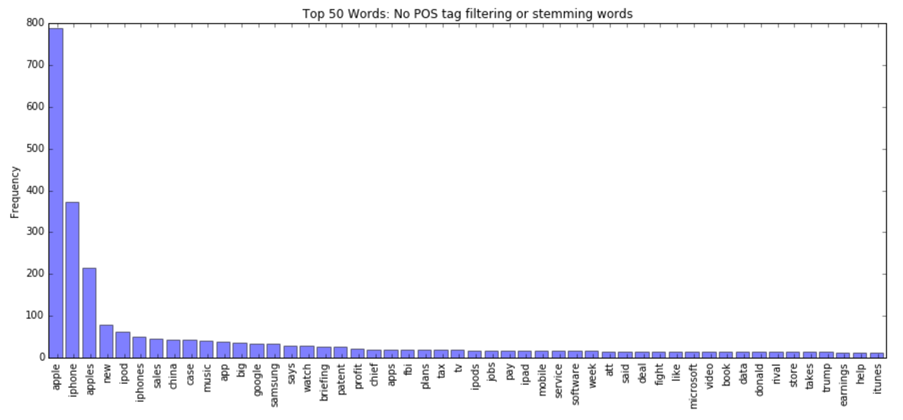
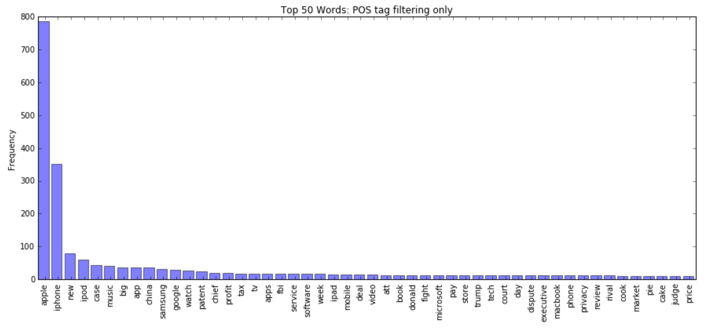
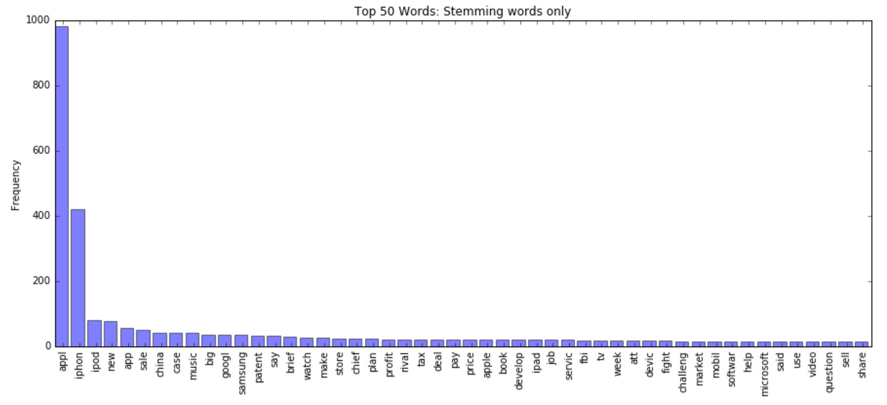
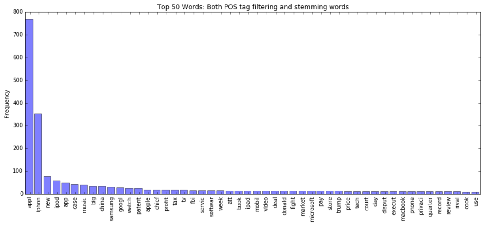
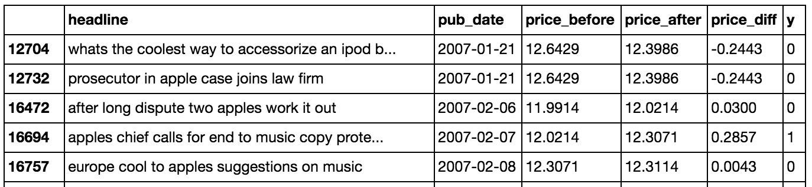
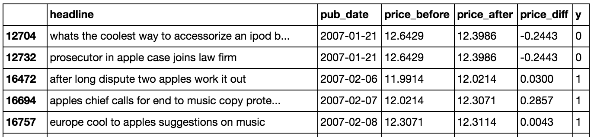

Project Overview
The purpose of this project is to explore how a published article about a particular company can affect that company's stocks. For this project specifically, we explored whether or not we can predict the direction of change in Apple stock prices given the release of a New York Times article that contains key words related to Apple in its headline. We assessed the utility of our predictions by calculating the average daily profit expected if we bought or sold a share of the stock based on our predictons each time a relevant article was released.


Objectives
In particular we wanted to explore the potential answers to some of these questions:
- Using past data, given the release of an article, are we able to witness a noticeable change in a company's stock prices?
- If so, what should this change take look like?
- How much of a change should we consider to be significant?
- What sort of time frame between article release and price change should we look at? Changes within an hour? A day? A week?
- How do these changes look over the course of a long period of time, going back several years?
- Can we use this data to build a model that will predict how the release of a future article will affect the stock price?
- Can we meaningully assess the effectiveness of our model by looking at the parameter of profit of buying and selling based on the prediction?
Methods
Data Collection
We pulled our news articles from the New York Times API. We took all news articles over the past 10 years dating from December 2006 to December 2016 and ended up with over 650,000 articles. We chose the New York Times API specifically because it was relatively easy to use and provided all the relevant information for the scope of our project including date of release, headline, and abstract. Our project focused on using the headlines as predictors.
For stock prices NASDAQ had a built-in feature on their website where we could specify a time range and download the stock price data of a company for that time period conveniently as a CSV file. The stock data contained information about:
- The opening and closing prices of the stock for that business day
- The max and min prices of the stock for that business day
- The number of shares that were traded for the day
However, for our purposes, we only used the closing prices of each day to determine whether or not a stock had gone up or down following the release of an article.
Data Cleaning and Dimensionality Reduction
Since we wanted to focus on Apple stocks, we first filtered our data by key words related to Apple or Apple products (i.e., "Apple", "AAPL", "iPod", "MacBook", "iPhone") in the headlines. This resulted in the reduction of the dataset from over 650,000 articles down to 1430 articles. On top of this, we experimented with feature selection by filtering out all words that did not match a certain part of speech (in particular nouns and adjectives) and/or word stemming on the filtered headlines:
Filtered data without POS tag filtering or stemming words Filtered data with only POS tag filtering
Filtered data with only POS tag filtering
 Filtered data with only stemming words
Filtered data with only stemming words
 Filtered data with both POS tag filtering and stemming words
Filtered data with both POS tag filtering and stemming words

We tokenized the headlines into single words to transform the headines into a bag of words; thus, each unique word is a predictor. The number of predictors were different depends on the feature set we used:
| Feature set | Number of predictors |
|---|---|
| No POS tag filtering or stemming words | 2960 |
| POS tag filtering only | 1685 |
| Stemming words only | 2392 |
| Both POS tag filtering and stemming words | 1620 |
And each of these feature sets has its own slightly different list of most frequent words:
   We noticed that the number of predictors was still very large (~1600 - 3000) considering the size of our data (~1400). Because of these attributes of the dataset, we were wary of overfitting the model. Thus, we also explored setting a threshold when vectorizing the headlines; that is, only words that appeared more than a certain number of times over the entire dataset will be included in the bag of words. In addition, we explored the use of principal component analysis (PCA) as an alternative way to reduce dimensionality. We experimented with the use of 2 components.
Calculating the response variable
We framed the stock price change problem as a binary classification problem: given the bag of words feature set, can we predict whether the stock will increase (1) or decrease (0)? Our points of reference revolved around the publication date of the article. The change in price was calculated using the closing price of the closest business day on or after the publication date (the "after" price) and the closing price of the closest business day before the publication date (the "before" price). Thus, the price difference = after price - before price.
Initially, we did not set a threshold; that is, if the stock price increased by $0.0001 or more, it was labeled as an increase; if the stock price decreased by $0.0001 or more, it was labeled as a decrease. However, we found that we were not able to attain great fidelity with our models, and we hypothesized that this was because our data could not predict changes in stock price to that precise of a movement.
Instead, we experimented with the implementation of a threshold: for a change in stock price to be labeled as a decrease (0), the price must have decreased by at least 0.05% of the previous day's price; otherwise, it was labeled as an increase (1). This "less than" threshold means that a decrease in stock price less than 0.05% of the previous day's price may still be labeled as an increase. The same idea applies to the formulation of the opposite "greater than" threshold; an increase in stock price less than 0.05% of the previous day's price may still be labeled as a decrease.
Examples of the difference in response variable of the two types of thresholds is below: Dataframe showing response labels for "greater than" threshold (increase >= 0.05% to count as an increase):  Dataframe showing response labels for "less than" threshold (decrease >= 0.05% to count as an decrease): 
Note that the different thresholds result in imbalanced classes:
| Threshold | Num items in Class 0 | % items in Class 0 | Num items in Class 1 | % items in Class 1 |
|---|---|---|---|---|
| "Greater than" (i.e., >= 0.5% increase labeled as 1) | 838 | 58.6% | 592 | 41.4% |
| "Less than" (i.e., >= 0.5% decrease labeled as 0) | 486 | 34.0% | 944 | 66.0% |
The imbalance intuitively makes sense: setting a high threshold for an increase ("greater than" threshold) would mean that fewer observations that will be classified as an increase (1), just as setting a high threshold for a decrease ("less than" threshold) would mean that fewer observations that will be classified as a decrease (0).
Analysis and Modeling
AdaBoosting
We attempted AdaBoosting with Decision Stumps as our weak classifiers for the simple reason that subsequent weak learners can be weighed as a result of misclassification of a previous classifier thus potentially leading to a strong classifier. We rationalized its usage based on its resistance against overfitting which can easily happen as our original dataset consisted of relatively few observations with a large number of predictors. Although AdaBoosting can be sensitive to overfitting, we imagined by filtering article headlines down to only their nouns and their adjectives we would be able to reduce the noise in our data.
After parameterizing the number of estimators for our AdaBoost classifier that yielded us the highest accuracy scores, we created another AdaBoost Classifier with the same parameters and created random training/testing sets to observe the distributions of true positive and true negative accuracy scores to see if there was any consistency in the scores.


Looking at the distribution of scores makes it apparent that the AdaBoost does not seem to be reliable because it fails to be consistent with its scores. This is likely due to the fact that our dataset is not large enough or precise enough to capture any sort of pattern relating words to stock price changes. There is too much variability in what the true positive and true negative accuracy scores are for our AdaBoost Classifier to have any significant predictive power.
Random Forest
We next experimented with a random forest model, an ensemble classification method that deals particularly well with high dimensionality and has methods for handling imbalanced datasets.
We hypertuned the parameters of our random forest model:
- Removal of all words except nouns and adjectives (POS)
- Removal of stem words (Stem)
- The number of occurrences a word has to have before being put into our bag of words (occurrence threshold)
- Whether no PCA dimensionality reduction is performed or with dimensionality = 2 (No PCA/PCA(2))
- Tree number of leaves
- Number of trees
- Depth of the trees


Utility Function
We can interpret our model as a decision maker for buying and selling stocks. In the end, we should ideally expect that these series of decisions will net us a profit greater than that netted by a naive method like flipping a coin.
We created a function that would simulate our decisions to buy and sell stocks based on the predictions of our trained model. We outline the function as the following:
- We assume to start that we start off with some existing shares of the stock so that we are able to sell without buying additional shares at any point in time
- For each article we encounter, we will make a transaction (buy or sell) on the closest business day on or after the publication date of the article:
- If the model predicts an increase in stock price, we will preemptively purchase one share of the stock
- If the model predicts a decrease in stock price, we will preemptively sell the one share of the stock
- We average these profits/losses per day across all ten years to get the average profit/loss that our model will produce per decision
We then compare the results of our model to the results of the following baseline decision makers:
- A random coin flip - You flip a coin; if heads you buy, if tails you sell
- Positive baseline - You always buy
- Negative baseline - You always sell
- A fortune teller - We know exactly how the stock will behave as a result of the article and we buy/sell perfectly
As mentioned in the previous section, because we set a price change threshold for a news article to be classified as changing in a certain direction, there was an imbalance in classes. There is a question of whether we should use the "greater than" threshold (>= 0.5% increase for label 1) or the "less than" threshold (>= 0.5% decrease for label 0). We realized that due to the nature of stocks generally increasing over time, selling incorrectly may arguably be worse than buying incorrectly because of the profit that we miss out on. Thus, we chose to use the "less than" threshold because it would take a significant decrease (>=0.5%) for us to want to sell the stock, and we more likely incorrectly buy than incorrectly sell.
Assessing Profit Using Utility Function for ModelWe ran simulations of model performance in terms of the average profit determined by the utility function. We repeated the simulations 50 times per random forest model with parameters specified in the "Random Forest" section above, and we compared the average profits against these baselines. The results are below:


We can see from the scores that models 19 (POS tag filtering = True, word stemming = True, occurrence threshold = 1, PCA components = 2, number of trees = 130, max depth = 9, max number of tree nodes = 9) and 30 (POS tag filtering = True, word stemming = False, occurrence threshold = 1, no PCA, number of trees = 70, max depth = 7, max number of tree nodes = 4) performed the best. However, we can see that Model 30 does, on average, better than Model 19. Below we compare and show the relative performance of the baseline models where the blue line is the model average profit, red is the "always buy" baseline model average profit, and black is the 50/50 random baseline model.


Both models do well in terms of the baseline models on average; thus, we can say with some confidence that our models outperform than the baseline models. However, it appears that Model 30 does slightly better than Model 19 in terms of outperforming the baseline models more consistently and by a larger margin.
Challenges
We ran into some issues with our initial data collection when we realized we were missing a lot of data when we used the Times Newswire part of NYT's API. We wanted to use this API because it conveniently provided a lot of useful metadata such as abstract and title. But there seemed to be many articles missing when we tried pulling from the past decade. Times Newswire seemed to only provide all the articles from the most recent year and only a select few from the past years. We instead had to use the Archive API, which gave us all the articles, but we had to do a little extra gruntwork to get the metadata.
One of the biggest challenges was working with the circumstances of the dataset, as the dataset returned only around 140 articles with Apple-related headlines per year for the ten years. We experimented with many different models before finding that random forest model performed consistently and did not overfit. In addition to these models, we attempted logistic regression, and we also looked at using lasso and ridge regression where the response variable is the change in stock prices. Method-wise, we also tried to bin the articles by week, and used both classification and regression models on the resulting binned data set. We also added the response variable of the previous week as a predictor variable to introduce a simple first-order auto-regressive term. None of these methods yielded any productive results that surpassed our work with the random forest models.
Conclusion and Future Work
We were able to use our random forest model to predict the direction of change of the price of Apple stock effectively enough to generate more profit on average per decision (~$0.18) than the baseline models of basing the decision on flipping a coin (~$0.04) or choosing to always buy (~$0.07) or always sell (~-$0.07). In terms of looking at the accuracy only, our final model does not necessarily perform stellar in terms of classificaton accuracy (~52% in overall accuracy, true positive accuracy, and true negative accuracy). However, if we consider only accuracy and not profit, the best random forest model can predict ~54-56% in overall accuracy, true positive accuracy, and true negative accuracy. This is likely because of the general upward trend of Apple stock prices over 10 years, which makes incorrectly predicting that the price of the stock will increase when it in fact decreases--our false positive rate--more forgivable. Setting the threshold to focus on only significant (>= 0.5%) decreases also helps to capitalize on this fact.
Had we more time, we would have liked to explore how our model performs in predicting the change of the price of any stock, beyond just Apple stock. Would we see similar performance? Additionally, we would like to further explore different sources of data -- perhaps acquiring news from a tech news source if we are focusing on a tech stock will yield data that is better able to capture the impact of news on stock prices. A larger or more targeted data source will help prevent overfitting and reduce noise.